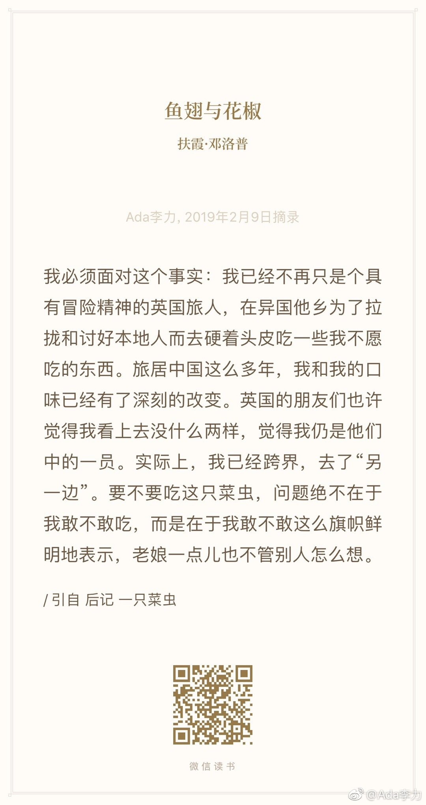
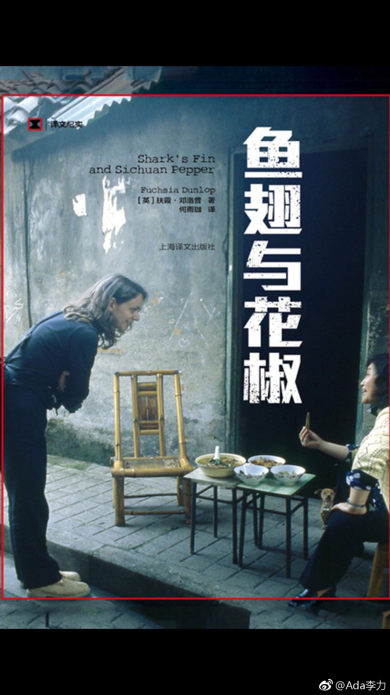

#读书#《鱼翅与花椒》 从另外一个角度看自己国家的饮食，很新颖，有些司空见惯的事情，被作者提出来，才发觉很有意味。
作者真是爱成都哈，看得我都想找时间去成都住上一阵。不过后来被中国各类大鱼大肉铺张浪费的宴席搞坏了胃口和心情，一度以为自己和中国的关系要结束了。但扬州之行，让作者恢复了胃口以及对中国的兴趣，包括觉得可以继续写关于中国的饮食书了。淮扬菜，就是不加辣椒的四川菜。这里面的渊源也是有趣哈。
我对后记“一只菜虫”更心有戚戚焉，不确定自己什么时候稍稍才摆脱了活在别人目光里的负累，以及有意识地问自己做事，是为了自己更开心，还是为了获得别人的赞誉？但我知道，仅仅在男女关系上的一句开悟“老娘再也不在乎了”，就给了我极大的自由度，简直有发现了新世界的感觉。
有更多的新世界等待去发现哈。
作者真是爱成都哈，看得我都想找时间去成都住上一阵。不过后来被中国各类大鱼大肉铺张浪费的宴席搞坏了胃口和心情，一度以为自己和中国的关系要结束了。但扬州之行，让作者恢复了胃口以及对中国的兴趣，包括觉得可以继续写关于中国的饮食书了。淮扬菜，就是不加辣椒的四川菜。这里面的渊源也是有趣哈。
我对后记“一只菜虫”更心有戚戚焉，不确定自己什么时候稍稍才摆脱了活在别人目光里的负累，以及有意识地问自己做事，是为了自己更开心，还是为了获得别人的赞誉？但我知道，仅仅在男女关系上的一句开悟“老娘再也不在乎了”，就给了我极大的自由度，简直有发现了新世界的感觉。
有更多的新世界等待去发现哈。
- 
- 